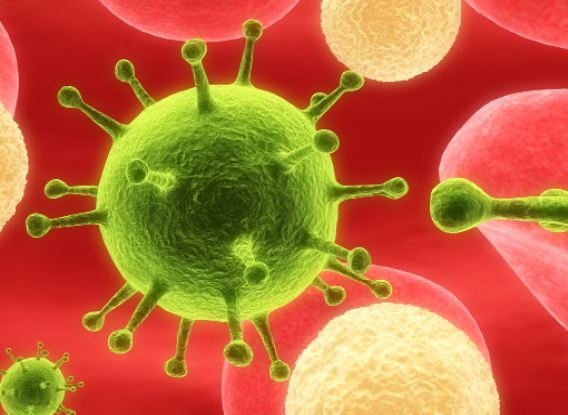

TREating HIV
Advanced enzyme technology in the fight against HIV
David Bai
Spring 2008

Since the first report of HIV on December 1, 1981 in the United States
Center of Disease Control and Prevention’s Morbidity and Mortality
Weekly Report, the World Health Organization has estimated that the
virus has claimed a startling 25 million lives, and has currently
infected 33.2 million of the world’s living population. Usually
transferred via bodily fluids from sexual contact or needle sharing,
HIV rapidly targets and invades immune system cells. There is no cure
or vaccine, and current antiviral treatments that help those who are
infected are costly at best. However, Indrani Sarkar, PhD, at the
Max-Planck Institute for Molecular Cell Biology and Genetics in
Germany, has recently taken a huge step in combating HIV with
breakthroughs in enzyme technology.
Current treatments target viral enzymes, proteins
that serve specific roles in helping the virus fuse to, penetrate, and
infect host cells. The drugs given today are only a means of slowing
the spread of HIV, not eradicating it. Thus, the virus is allowed to
mutate within the host and eventually develop drug resistance. Other
common complications include the cost of treatment, individual
non-adherence to treatment programs, and patient-drug sensitivity.
Although vastly improved since their introduction, these conventional
methods are far from ideal for the fight against HIV.
In what she believes is a superior method of attack,
Sarkar and her research team have developed an enzyme capable of
evicting the virus’ DNA from its host cell. Called Tre, the enzyme is a
highly evolved and engineered recombinase that has taken 126 cycles of
mutation and nearly four years to develop. This extensive time
investment has paid off, as Tre has successfully eliminated HIV from
the human genome in three months, according to the study published in
the June 2007 issue of Science.
“The most important aspect is that this shows a way
to eradicate the virus and not just suppress the virus,” says Sarkar.
“What makes HIV so deadly is its ability to insert itself into the
body’s cells and force those cells to produce new infection.”
The researchers began with a bacterial enzyme called
Cre, which works by recognizing pieces of target DNA that are flanked
by certain sequences known as lox P sites. These sites are cut in half
by the enzyme, and the target DNA is then excised and degraded. The
original DNA becomes ligated, or “glued,” back together. Tre, the
product of Sarkar’s research, employs the same concept of cutting out
sequences to rid the human genome of the HIV DNA.